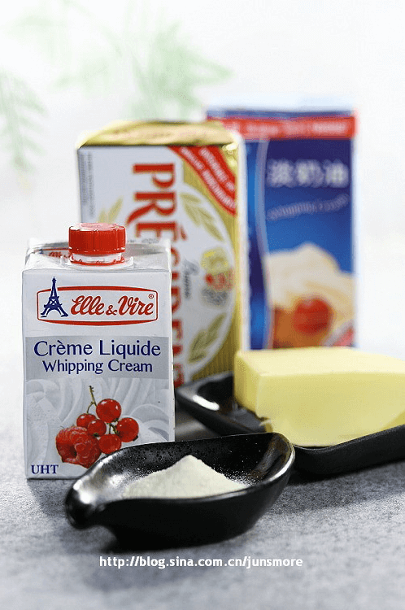
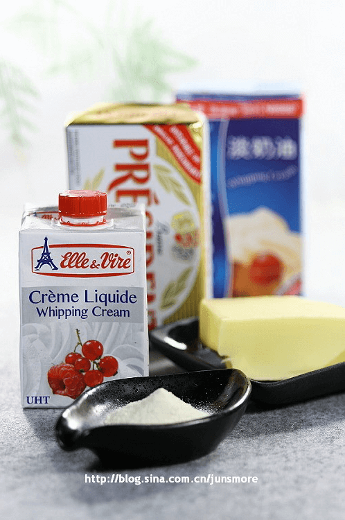

说说烘焙里奶制品的那些事儿
3秒前烘焙的原料很多，不同种类的点心会需要用到不同的原料，刚接触的人往往会觉得头大。但这并不是最头疼的，最头疼的是，很多原料的名称非常类似，一不小心就会混淆，其中，奶制品表现得尤为突出。
头疼事小，用错原料使辛苦制作的甜点一败涂地就事大了。如果你曾经对“奶油”、“淡奶油”、“芝士”、“奶酪”等名称感到糊涂过，请别担心，往下看看吧。
- 分享
- 编辑
- 举报
烘焙的原料很多，不同种类的点心会需要用到不同的原料，刚接触的人往往会觉得头大。但这并不是最头疼的，最头疼的是，很多原料的名称非常类似，一不小心就会混淆，其中，奶制品表现得尤为突出。
头疼事小，用错原料使辛苦制作的甜点一败涂地就事大了。如果你曾经对“奶油”、“淡奶油”、“芝士”、“奶酪”等名称感到糊涂过，请别担心，往下看看吧。
456人赞过
沙发啊！！po主~~做蛋糕时里面的奶粉能换成 豆奶粉吗 ？总统牌的奶酪（小孩补钙直接吃的）能不能用来做芝士蛋糕？？？？？？？？？？？？？
沙发啊！！po主~~做蛋糕时里面的奶粉能换成 豆奶粉吗 ？总统牌的奶酪（小孩补钙直接吃的）能不能用来做芝士蛋糕？？？？？？？？？？？？？
沙发啊！！po主~~做蛋糕时里面的奶粉能换成 豆奶粉吗 ？总统牌的奶酪（小孩补钙直接吃的）能不能用来做芝士蛋糕？？？？？？？？？？？？？
沙发啊！！po主~~做蛋糕时里面的奶粉能换成 豆奶粉吗 ？总统牌的奶酪（小孩补钙直接吃的）能不能用来做芝士蛋糕？？？？？？？？？？？？？
沙发啊！！po主~~做蛋糕时里面的奶粉能换成 豆奶粉吗 ？总统牌的奶酪（小孩补钙直接吃的）能不能用来做芝士蛋糕？？？？？？？？？？？？？
1 2 3 下一页 尾页
查看更多评论内容